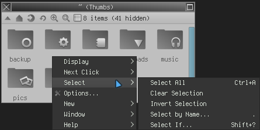

lang fr|gb

howto use rox-filer
ROX-Filer is a fast, light and highly configurable graphical file manger for the X Window System.
rox-filer includes a very complete contextual menu. you can define actions on files (by type or name), edit your menus, sort or rename files & folders ...
specificities
- open/edit files and folders with a single-click
- pics/videos thumbnails
- folders custumization
- independant icon theme
- full drag-&-drop support
- editable bookmarks
- full editable configuration with options and contextual menus
- file's names coloration depending on file's type
- ... and much more functions unused in livarp available in the user manual on sourceforge.net
utilisation
rox-filer accepts regular keybinds (as Ctrl+c/v) and some others:
- Ctrl+h : display hidden files
- Ctrl+x : delete file
- Ctrl+p : display file properties
- Ctrl+f : find from a template
- / : launch path navigation
- ! : execute a shell command in the current directory
rox-filer options
right-clic on the rox-client, then choose 'options' and configure your file-manager:
navigate through tabs to configure rox-filer


rox-filer menus
right-click on the rox client allows you to configure display, sort, create files/folders, view, open a terminal in the directory...
display menu
select menu
new menu
help menu
window menu
right-click on a file opens contextual menu:
press "/" to launch path navigation (ESC to quit)
notice
rox-filer uses single-click, so if you clic on a script .. it runs...
rox-filer doesn't use trashcan, it deletes, so take your time if you delete files or directories :)